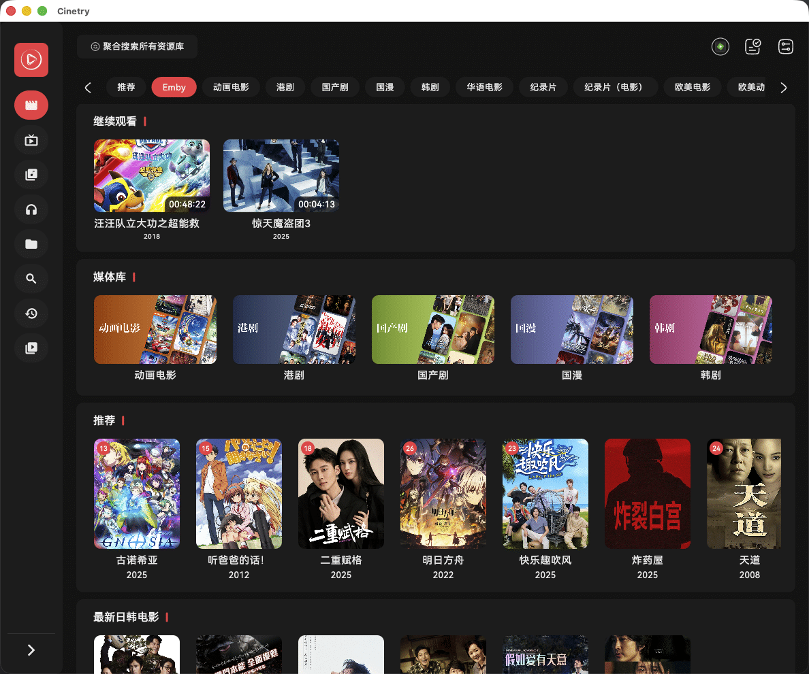
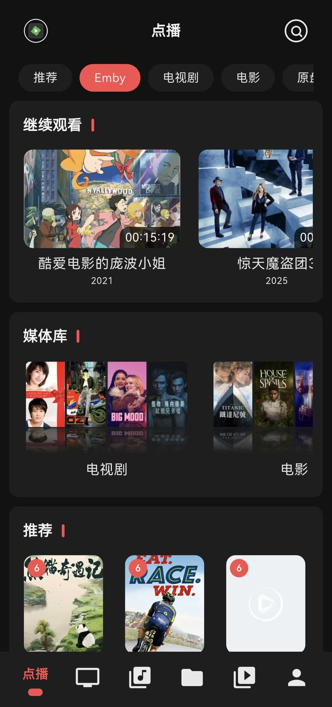

Cinetry 从零上手：把你手里的视频源全部整合到一个播放器里
还在手机装一个 TV 端装一个、每个盒子都单独找片源？Cinetry 一套资源库配置搞定多端同步，本篇带你从安装到导入 IPTV 和 CMS 源完整走一遍。
读完这篇教程，你手里那些散落在不同盒子、不同手机里的视频源——无论是 IPTV 直播、苹果 CMS 点播，还是 TvBox 订阅链接——都能整合进同一个播放器，并且桌面端、手机端、TV 端共用一份资源库配置，看片不再来回折腾。
准备工作：先把安装包拿好
Cinetry 是一款跨平台的视频聚合播放器，它的官网上正式版的官方下载同步发布在多个渠道，主渠道是 GitHub Releases，另外还有 123 云盘和小飞机网盘两个备用下载点，速度会更快。如果你想提前体验还没正式上线的新功能，可以去找预览版——通常比正式版快一到两个版本号，但可能包含还不太稳定的改动。
各平台安装步骤差别不小，这里重点说几个新手最常踩坑的。
Android 和 TV 端
安卓手机装 Cinetry 最直接：下载 APK 到手机，打开文件管理器找到安装包，系统会弹一个「允许安装未知来源应用」的权限请求——不同手机厂商的措辞可能不一样，小米叫「允许本次安装」，华为叫「允许安装该应用」，总之点允许就行。
安卓电视或盒子稍微绕一点。官方的建议很明确：TV 端直接装手机版 APK 就行，不需要专门找什么 TV 版。你可以用 U 盘把 APK 拷过去插盒子里装，也可以用 ADB 命令行推送，嫌麻烦就装个应用商店辅助工具（比如当贝市场里搜「文件管理器」），直接从局域网或网盘下载 APK 打开。支持的 CPU 架构是 arm64-v8a，体积大概 78MB，系统要求 Android 7.0 以上——目前市面上绝大多数盒子都能满足。
Windows / macOS / Linux
Windows 下载 exe 安装包双击就能跑向导，选好安装路径等进度条走完，桌面自动生成快捷方式。要求是 Windows 10 以上的 64 位系统。
macOS 用户下载 dmg 文件，双击打开把 Cinetry 图标拖进「应用程序」文件夹就完成了。但 macOS 的 Gatekeeper 经常会拦截——首次启动时如果弹「无法打开，因为无法验证开发者」，去「系统设置 → 隐私与安全性」往下翻，在底部能看到一条「Cinetry 已被阻止」的提示，点旁边的「仍要打开」，以后就不会再拦了。Apple Silicon 和 Intel 两种架构的 Mac 都支持。
Linux 提供 AppImage 和 deb 两种格式，AppImage 下载后需要 chmod +x 给执行权限，deb 用 dpkg 装，Debian / Ubuntu 系发行版直接用就行。
iOS 的特殊情况
iOS 因为系统封闭，安装路径稍微曲折一点。目前有三种方式：最稳定的是 TestFlight——打赏开发者后留言邮箱，能拿到邀请链接；第二种是用爱思助手，连电脑后装 IPA；已经越狱或装了巨魔的设备可以直接侧载 IPA，自由度最高。
第一步：导入你的 IPTV 直播源
安装完成后第一次打开 Cinetry，侧边栏的资源库管理是空的。我们从最常用的 IPTV 直播源开始。
Cinetry 支持两种 IPTV 格式：最主流的 m3u / m3u8 播放列表，以及 TvBox 常用的 txt 节目单格式。导入方式也有两种——网络地址和本地文件，大多数人手里的 IPTV 源都是以 URL 形式分享的，直接填地址就行。
在资源库添加页面选择「IPTV」作为类型，把 m3u 或 txt 的地址粘进去，确认后 Cinetry 会自动下载解析频道列表。

IPTV 资源库有几个特点需要知道：不需要账号密码，只要地址能访问就能导；导入多个 IPTV 源时 Cinetry 会把所有频道合并到一个列表里，不用自己手动去重；另外 IPTV 不参与播放进度同步——毕竟直播内容没有进度条这个概念。
常见卡点 1：m3u 导入后频道列表为空
这是新手最常遇到的问题。排查顺序按这个来：先在浏览器里打开那个 m3u 地址看能不能正常下载文件（确认 URL 本身有效），再检查文件开头有没有 #EXTM3U 标准标识（有些不规范的源会漏掉这一行），最后看网络环境——有些 IPTV 源有地区限制或需要特定的 UserAgent。
第二步：用 TvBox 订阅一键批量导入
如果你手上有别人分享的 TvBox 订阅地址（就是一串 JSON 格式的 URL），Cinetry 提供了一个省时省力的快捷方式——直接导入整个 TvBox 订阅。
操作路径在「数据中心 → TvBox 订阅导入」，把订阅链接粘进去，UserAgent 字段默认留空就行，执行导入。Cinetry 会自动从订阅配置里解析出所有的苹果 CMS 点播接口和 IPTV 直播接口，逐个导入到资源库管理页面，还会检测每个接口能不能连上——连不上的自动跳过，不会阻塞其他接口的导入。
需要注意的是，TvBox 订阅里的「网页解析」数据目前还不支持导入，只有 CMS 和 IPTV 两种类型的接口会被提取。
常见卡点 2：订阅里的有些源之前手动加过
Cinetry 不会在这种情况下重复创建一个同名资源库，而是做数据更新——用订阅里的新配置覆盖旧的。所以放心批量导就行，不会把资源库管理撑得乱七八糟。如果导入后想精细调整每个库的开关、或者配 EPG 节目单这些进阶设置，可以去Cinetry文档里查。
第三步：桌面端快捷键，看片快人一步
资源库配置好之后就是日常使用了。桌面端（Windows / macOS / Linux）的播放器快捷键值得花两秒钟记一下，尤其是空格和 F 这两个——看片时手放在键盘上按一下比移鼠标去点屏幕快得多。
最常用的几个：
- 空格：播放 / 暂停切换
- F：全屏 / 退出全屏
- ESC：退出全屏或关闭播放器
- 左右方向键：快进 / 后退
- 上下方向键：上一集 / 下一集
从 0.8.3 版本起，音量调节改成了软件音量控制——这意味着你在 Cinetry 里调音量只影响 Cinetry 本身，不会把系统全局音量拉下来。对同时挂着浏览器或语音通话的场景特别友好。
三套操作方式各自独立：桌面端是键盘，手机端是屏幕手势，TV 端是遥控器按键，互不干扰。

进阶：同步到多端
资源库配好之后，手机装一个 Cinetry、盒子装一个 Cinetry，把同一个资源库配置导过去就行——CMS 和 IPTV 源本质上都是 URL，换个设备粘进去就通。播放进度和收藏列表支持多端同步，但 IPTV 直播因为没有进度概念所以不走同步通道。
写在最后
Cinetry 的核心理念就是「配置一次、全端通吃」，不需要在每个盒子上单独装一套源、也不需要为不同设备维护不同的播放列表。上面这三个步骤——安装、导入 IPTV、批量导入 TvBox 订阅——覆盖了绝大多数人的使用场景，剩下的字幕切换、EPG 节目单这些进阶功能，等你把基础流程跑通了再去折腾也不迟。关于资源库的整理和更新节奏，资料同步放在了GitHub、Gitee、GitCode 三个仓库上，选一个访问顺手的就行。